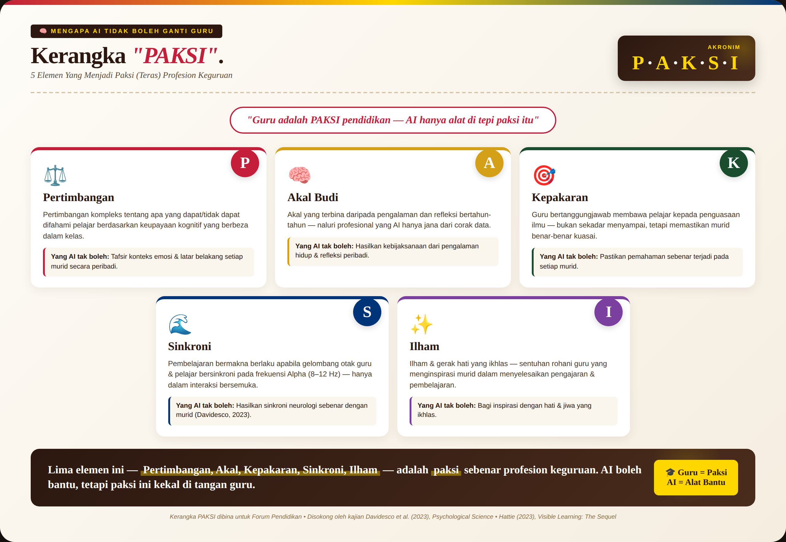
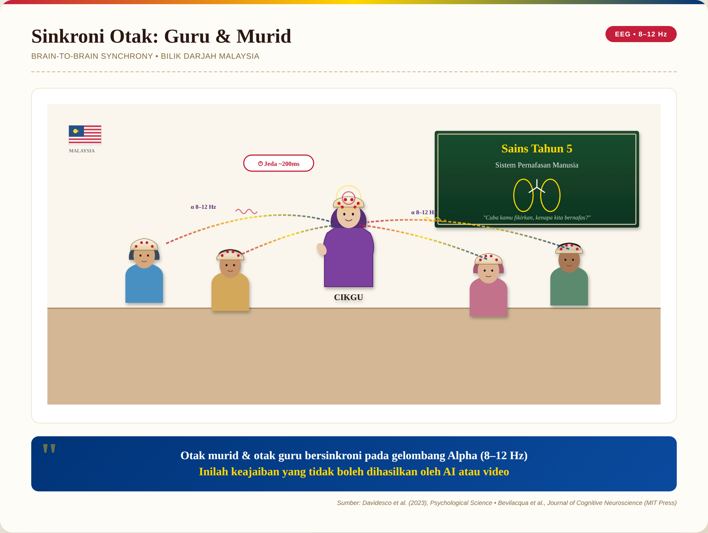
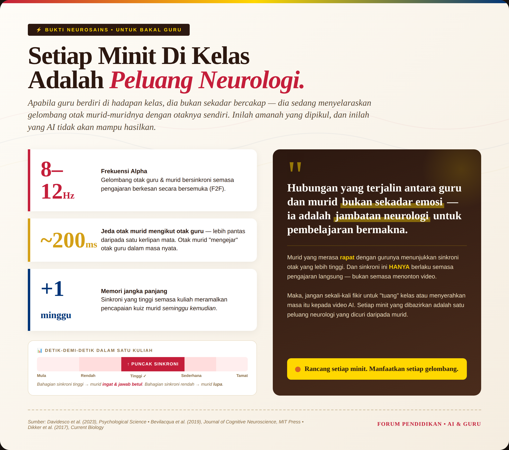
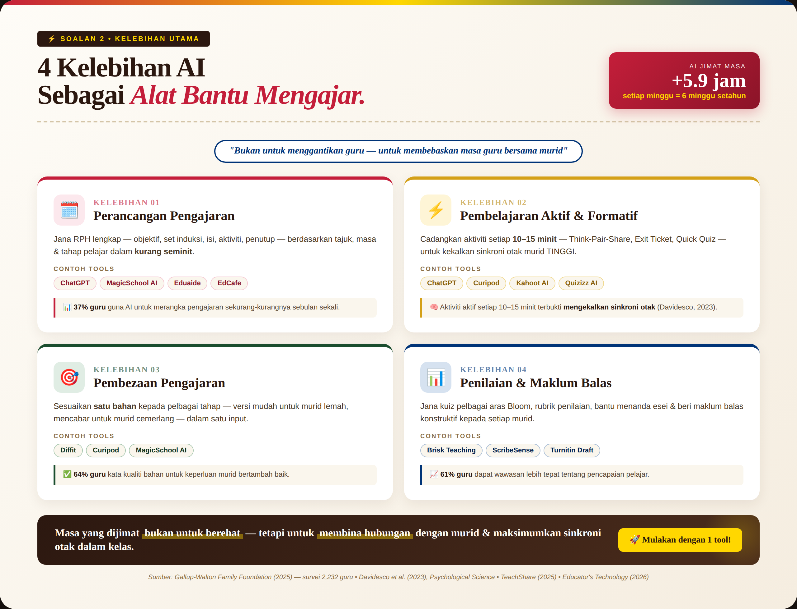
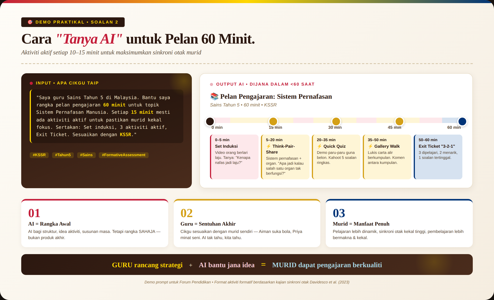
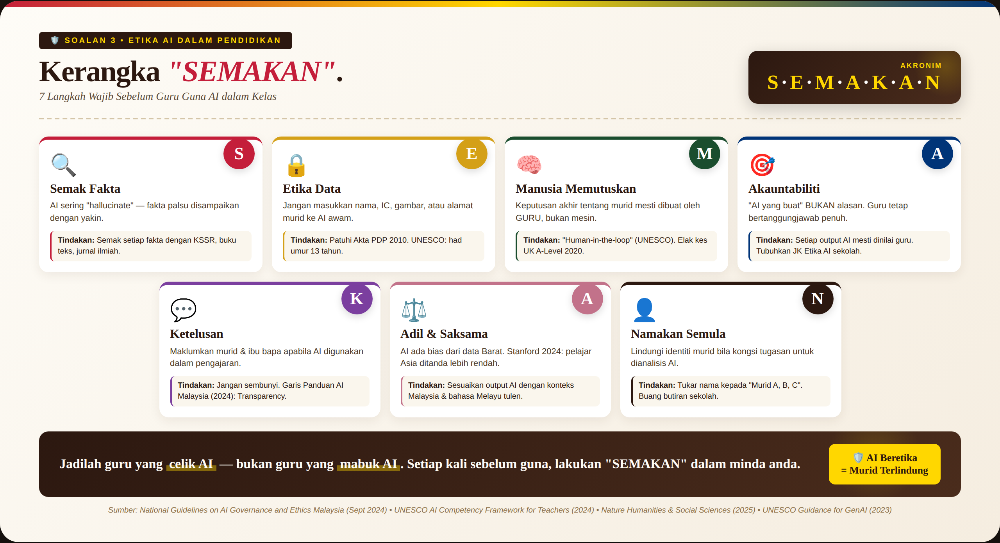

Tiga perspektif untuk bakal pendidik: mengapa AI tidak boleh menggantikan guru, bagaimana AI memperkasakan guru, dan bagaimana menggunakan AI secara beretika.
Pendidikan bukan sekadar pemindahan maklumat — ia adalah pertemuan dua jiwa, dua otak yang bersinkroni. Ada 5 elemen yang menjadi paksi (teras) profesion keguruan yang AI tidak akan mampu hasilkan.
Seorang murid darjah tiga, mata berkaca-kaca, masuk ke kelas pagi tadi tanpa sarapan kerana ibu bapanya bergaduh malam tadi. Mampukah ChatGPT mengesan getaran emosi pada wajah anak kecil itu, lalu menepuk bahunya sambil berkata "Cikgu ada, makan dulu ya"?


Gelombang otak guru dan murid bersinkroni semasa pengajaran berkesan secara bersemuka.
Otak murid "mengejar" otak guru lebih pantas daripada satu kerlipan mata.
Sinkroni tinggi meramalkan pencapaian kuiz murid seminggu kemudian.

Bukan untuk menggantikan guru — tetapi untuk membebaskan masa guru bersama murid. AI bantu jimatkan masa, supaya guru ada lebih ruang untuk apa yang penting.
Kajian Gallup-Walton 2025 ke atas 2,232 orang guru menggunakan AI secara mingguan.
Guru kata kualiti bahan pengajaran mereka bertambah baik selepas guna AI.
Guru dapat memahami pencapaian pelajar dengan lebih mendalam.


Salin prompt ini ke ChatGPT, Gemini, atau MagicSchool AI. Tukar yang berwarna kuning ikut kelas anda — selebihnya AI yang uruskan!
7 langkah praktikal untuk pastikan penggunaan AI di tangan guru menjadi rahmat, bukan bencana — disusun mengikut akronim mudah dalam Bahasa Melayu.
Pertama: UK Ogos 2020. Algoritma Ofqual digunakan untuk meramal markah A-Level kerana COVID-19 batalkan peperiksaan. Hasilnya — hampir 40% (280,000 keputusan) diturunkan markah, dan pelajar dari sekolah miskin 2 kali lebih cenderung diturunkan markah berbanding pelajar dari sekolah kaya. Beratus pelajar berdemonstrasi di Downing Street dengan slogan "F*** the algorithm". Dalam masa 4 hari, kerajaan UK terpaksa batalkan algoritma sepenuhnya.
Kedua: Kajian global tunjuk AI sering "hallucinate" — beri fakta palsu dengan penuh keyakinan, termasuk rujukan akademik yang langsung tidak wujud!

Sebelum guna output AI dengan murid, gunakan prompt ini untuk semak diri sendiri:
Kalau anda hanya boleh ingat 3 perkara dari pembentangan ini — biarlah ini.
5 paksi profesion keguruan — Pertimbangan, Akal, Kepakaran, Sinkroni, Ilham — yang AI tidak akan mampu hasilkan.
AI jimatkan +5.9 jam seminggu (atau 6 minggu setahun!) — laburkan masa itu semula kepada hubungan dengan murid.
Sebelum guna AI — buat SEMAKAN. Kerangka 7 langkah beretika untuk memastikan AI menjadi rahmat, bukan bencana.
Teknologi datang dan pergi. Tetapi panggilan jiwa seorang guru tidak akan pernah usang. Jadilah guru yang celik AI — bukan yang mabuk AI.
Selamat menjadi guru yang berhati guru. 🙏